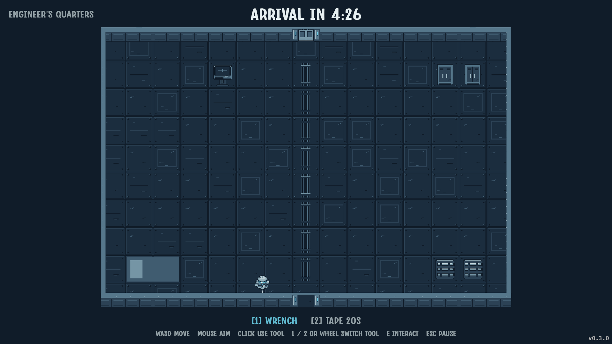

01 / Course alignment
A ship silhouette within a square lock zone. The rotating sweep stays behind the target and cursor.
02 / Engine assembly
Raised service plates, a coolant manifold, recessed vents and a live pressure gauge.
03 / Thread engagement
The socket stays fixed. The hex head turns while the exposed shank retracts, then seats flush.
04 / Repair tape
The held-tool pose feeds a textured strip onto the wall; its leading edge presses down into a woven patch. Standalone roll animation shown here.
05 / Full-height walls, a narrower footprint

The engineer stays visible at the foreground edge. Every wall keeps its full 22-pixel face; the 12-pixel cap sits 18 pixels toward the outer edge of the grid. Door frames follow the same raised border.